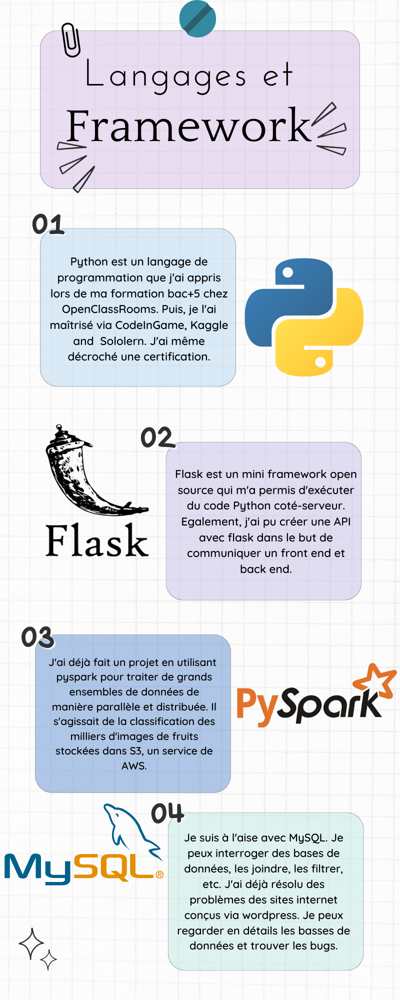

Compétences
Depuis 2012, je cumule des compéténces polyvalents. Alors que je me concentrais sur ma thèse à l'époque, je m'amusais en parallèle à apprendre la création des sites internet, la création des applications, l'apprentissage des langages de programmation, etc. Tout cela m'a permis de me reconvertir facilment en Data science en début de 2021. C'est l'effet boule de neige. Voici un apperçu des mes compétences polyvalentes:
- Langages et framework
- Wordpress
- Applications
|
Je fais ce paragraphe en utilisant plusieurs scripts et langages de programmation ou framework: html, css, js, python, flask.
Je suis fasciné par la résolution des CLASH of CODE sur le site CodInGame.
J'arrive au niveau 25 où j'ai résolu plus de 70 quiz en Python. De plus, je suis un certificat en Python.
Voici un de mes codes pour un quiz: Il s'agit
|

|